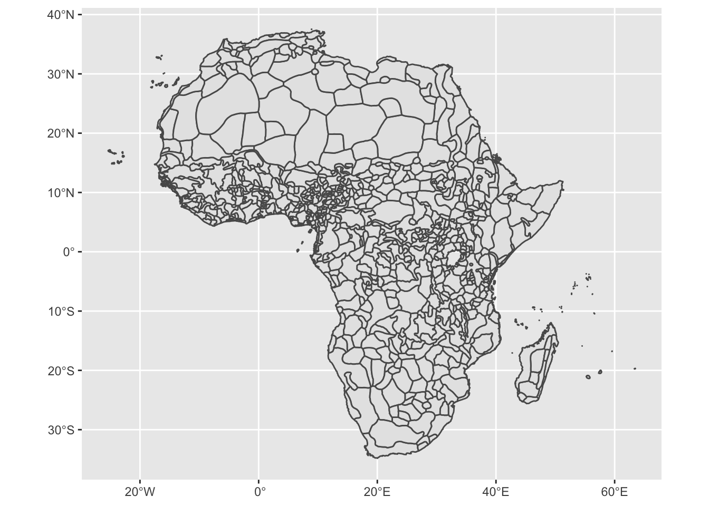
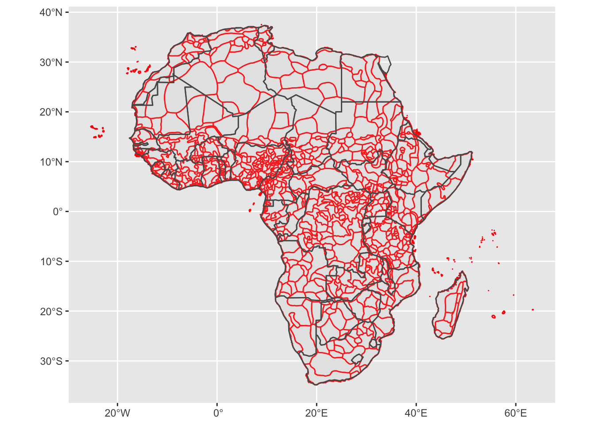

Week 3 Exercise
This week we looked at various forms of historical data. For the week’s coding task, we’ll be using data from the article by Michalopoulos and Papaioannou. We’ll be using the individual-level public goods (survey) data that they use in conjunction with the spatial data on the locations of ethnic group boundaries and contemporary country borders.
This survey data is a relatively large dataset (over 80K observations) but have no fear: you’ll see that the techniques we use to process these data are no different to what we’ve seen before.
First we read in the data from a csv file as we’ve done before:
library(sf)
library(tidyverse)
library(rnaturalearth)
library(leaflet)
library(stargazer)
mich_data <- read.csv("https://raw.githubusercontent.com/cjbarrie/teaching_material/master/dhs_main.csv")Each row in this dataset is a survey respondent. A list of the variables included, and their respective codings, is provided below.
| Number | Variable Name | Description |
|---|---|---|
| [5] | seadist | The distance from respondent’s enumeration area to the nearest coastline. |
| [8] | loc_split10pc | equals 1 if the respondent resides in a partitioned ethnic homeland |
| [11] | wealth | country-specific quantiles of wealth; constructed by the DHS |
| [12] | religion | Seven religion constants (fixed effects). The 7 categories are: Traditional, Islam, Catholic, Protestants, Other Christians, Other, None. |
| [13] | marital | A vector of six variables capturing different forms of marital status in the original surveys |
| [17] | eduyears | Number of years of education |
The dataset contains many thousands of observations. But this doesn’t change the techniques we use to summarize and understand these data. To get a summary view of these data we can produce some descriptive statistics.
We’ll select a set of other relevant variables from this dataset. These are:
## seadist religion marital eduyears
## Min. :0.0000003 Min. :1.000 Min. :0.0000 Min. : 0.00
## 1st Qu.:0.1660690 1st Qu.:1.000 1st Qu.:0.0000 1st Qu.: 0.00
## Median :0.4335949 Median :2.000 Median :1.0000 Median : 6.00
## Mean :0.4667388 Mean :2.256 Mean :0.7872 Mean : 5.46
## 3rd Qu.:0.7496447 3rd Qu.:3.000 3rd Qu.:1.0000 3rd Qu.: 9.00
## Max. :1.7160016 Max. :7.000 Max. :5.0000 Max. :24.00
## NA's :128When you analyze data in R, you will at some stage want to produce tables that can be included in your written work. The stargazer package is particularly useful for these purposes. To produce a summary table in plain text format, we can simply type:
##
## ================================================================
## Statistic N Mean St. Dev. Min Pctl(25) Pctl(75) Max
## ----------------------------------------------------------------
## seadist 88,171 0.467 0.337 0.00000 0.166 0.750 1.716
## religion 88,171 2.256 1.458 1 1 3 7
## marital 88,171 0.787 0.919 0 0 1 5
## eduyears 88,043 5.460 4.699 0.000 0.000 9.000 24.000
## ----------------------------------------------------------------And if wanted to format the variable names to something more informative than the abbreviated format in which they appear in the dataset, we could type
stargazer(sumdata, type = "text",
covariate.labels=c("Distance to the sea",
"Religion",
"Marital status",
"Education"))##
## ==========================================================================
## Statistic N Mean St. Dev. Min Pctl(25) Pctl(75) Max
## --------------------------------------------------------------------------
## Distance to the sea 88,171 0.467 0.337 0.00000 0.166 0.750 1.716
## Religion 88,171 2.256 1.458 1 1 3 7
## Marital status 88,171 0.787 0.919 0 0 1 5
## Education 88,043 5.460 4.699 0.000 0.000 9.000 24.000
## --------------------------------------------------------------------------You can consult the documentation for the stargazer package here. To save the output directly to word, we just need to change the type option to "html" and specify the name of the table document after out = as below:
stargazer(sumdata, type = "html",
covariate.labels=c("Distance to the sea",
"Religion",
"Marital status",
"Education"),
out = "mysummarytable.doc")The key variables of focus in the article by by Michalopoulos and Papaioannou are those in columns 8 and 11 of the variable codebook above.
Column 8 in the dataframe records whether or not the respondent lives in a partitioned ethnic homeland. This is the main independent variable of interest in the article by Michalopoulos and Papaioannou. The wealth variable in column 11 is split into five categories, or quantiles, reflecting lower to higher wealth. In the article we read, Michalopoulos and Papaioannou find that those residing in partitioned areas were likely to have low wealth scores relative to respondents in non-partitioned areas.
Contingency tables
We can examine this trend using a crosstab, or “contingency table.” You will have seen these when learning about the chi-squared statistic. To do this, we use the xtab and ftable functions. We do not need to install any extra packages for this.
## wealth 1 2 3 4 5
## loc_split10pc
## 0 7729 8220 9048 10416 13871
## 1 7831 7725 7507 7898 7926## Call: xtabs(formula = ~loc_split10pc + wealth, data = mich_data)
## Number of cases in table: 88171
## Number of factors: 2
## Test for independence of all factors:
## Chisq = 913.8, df = 4, p-value = 1.664e-196How would you describe the percentages contained in these tables? You may first want to calculate the row and column percentages from the counts in the contingency table.This page might help.
Recoding variables
We might also want to see if partitioned homelands have generally lower levels of education. To do so, it would make sense to recode the education variable into a categorical variable. We’ll first have a look at the unique values of this variable.
## [1] 0 8 6 5 16 2 12 4 3 7 11 9 10 13 15 17 14 1 18 NA 19 20 21 22 24Note that by specifying -Inf and Inf, we are simply saying that the first and last values run from the lowest values for the variable to the next highest values, and from the second highest value for the variable to the highest value.
Visualizing spatial data
The paper by Michalopoulos and Papaioannou relies fundamentally on GIS (Geographic information systems) data, or maps. Their variable for ethnic partition is derived from a series of maps drawn up by George Murdock in 1959. These have been digitized, by Nathan Nunn, here. We are going to use these to try to recreate what Michalopoulos and Papaioannou do in their paper. In essence, what they are doing is overlaying two maps, the first by Murdock, and the second of contemporary African states. Then they look to which states have borders that partition, or intersect with, ethnic groups.
Once again, you can download an abridged version of the data these authors use from my Github page. This contains the original names of each ethnic group and their approximate position.
I have also uploaded the necessary shapefiles for the Murdock data to my Github page here, though they can also be downloaded at the link supplied above. As in last week’s exercise, you will need to make sure that the Murdock shapefiles are in your working directory in order to load them into the R workspace environment.
First we’ll need to get the data on ethnic homelands:
mich_hdata <- read.csv("https://raw.githubusercontent.com/cjbarrie/teaching_material/master/mich_homelands_data.csv")And we can easily plot the locations of ethnic homelands according to the Murdock data as below:
## Reading layer `murdock_ea_2010_3' from data source `/Users/christopherbarrie/Dropbox/Teaching/02_Github/MMES-Ox/MMES-2021/other_files/murdock_ea_2010_3.shp' using driver `ESRI Shapefile'
## Simple feature collection with 843 features and 28 fields
## geometry type: MULTIPOLYGON
## dimension: XY
## bbox: xmin: -25.35875 ymin: -34.82223 xmax: 63.50018 ymax: 37.53944
## geographic CRS: WGS 84
To look at how these ethnic homelands overlap with current state boundaries, we also need data on contemporary state boundaries. this can be achieved easily using the rnaturalearth package as you’ll see below.
Now that we have both the boundaries of former ethnica homelands as well as contemporary state boundaries. Plotting them on top of each other can be easily achieved with:
murdock_shp <- st_read("murdock_ea_2010_3.shp")
ggplot() +
geom_sf(data = murdock_shp, col= "red") +
geom_sf(data = africa, alpha =.1)## Reading layer `murdock_ea_2010_3' from data source `/Users/christopherbarrie/Dropbox/Teaching/02_Github/MMES-Ox/MMES-2021/other_files/murdock_ea_2010_3.shp' using driver `ESRI Shapefile'
## Simple feature collection with 843 features and 28 fields
## geometry type: MULTIPOLYGON
## dimension: XY
## bbox: xmin: -25.35875 ymin: -34.82223 xmax: 63.50018 ymax: 37.53944
## geographic CRS: WGS 84
This is useful but it would be good to have an idea of which ethnic groups these areas represent. We can add these in with the mich_hdata, which contains this information. There are lots of groups, so plotting them all would clutter the map and make it hard to interpret. Helpfully, the tt>leaflet package allows you to “cluster” observations by their position, allowing you to zoom in and out on certain areas and freeing up space on the map. If you hover over the points, the name of the particular ethnic group will appear. This is a bit more advanced: don’t worry if you don’t understand it all! I include it mainly to give you an idea of what is possible when working with spatial data.
Back to the MENA
This map gives you an idea of the different ethnic groups included in the original Murdock (1959) data as well as how their boundaries overlap with modern state boundaries. It would be interesting to see how the states of the MENA countries compare with each other according to the metrics of interest specified in the Michalopoulos and Papaioannou paper. Let’s constrain our focus to the modern-day states of Morocco, Algeria, Tunisia, Libya, Egypt, and Sudan (we don’t have data on Western Sahara). The code below filters the Michalopoulos and Papaioannou data, keeping only the observations for the six Arab states.
mena_data <- mich_hdata %>%
filter(cntry_name=="Morocco"|
cntry_name=="Algeria"|
cntry_name=="Tunisia"|
cntry_name=="Libya"|
cntry_name=="Egypt"|
cntry_name=="Sudan")Next we need to group these data once again, this time by country, and sum the relevant variables of interest. We are going to look, in particular, at the variables “ethgrp” (the name of the ethnic group or “cluster”); “battles”; “vio”: and “riots”. To sum over ethnic groups, we first need to make a variable recording each ethnic group as a “1” so that we can sum over these values (you cannot sum over string values). We could do this by adding in a new variable by calling mena_data$ethgrp <- 1 but we can also do this within one pipe with the mutate() function.
mena_data_summed <- mena_data %>%
mutate(ethgrp=1) %>%
group_by(cntry_name) %>%
summarize(sum_ethgrps= sum(ethgrp),
sum_battles = sum(battles),
sum_vio = sum(vio),
sum_riots = sum(riots))Are the results what we could expect? Let’s see what they look like.
## # A tibble: 6 x 5
## cntry_name sum_ethgrps sum_battles sum_vio sum_riots
## * <chr> <dbl> <int> <int> <int>
## 1 Algeria 20 373 357 155
## 2 Egypt 7 58 147 240
## 3 Libya 10 7 6 22
## 4 Morocco 13 8 8 68
## 5 Sudan 61 1481 1121 230
## 6 Tunisia 9 13 16 36Coding tasks
- Produce a table of descriptive statistics for the Michalopoulos and Papaioannou data. Select a subset of variables to include in this table and label the variables with proper names (i.e., not variable names).
- Produce a contingency table of the categorical education variable against the variable for ethnic partitioning as above with wealth.
- Produce a table of all the ethnic groups in an Arab country of your choosing.